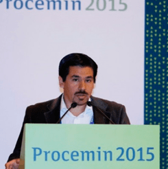
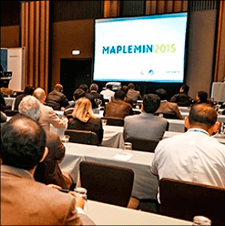
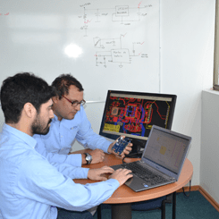

Noticias
-
Seminario Flotación, Jan Cilliers
El Departamento de Procesos de la empresa NETOS asistió al seminario "POSITRON VISUALIZATION OF FLOTATION PARTICLES AND LIQUID TO VALIDATE CFD MODELS".
Ver masSeminario Flotación, Jan Cilliers
En pos de buscar nuevas posibilidades de desarrollos para la industria en el área de procesamiento de minerales, específicamente en el proceso de flotación, el Departamento de Procesos de la empresa NETOS asistió al seminario "POSITRON VISUALIZATION OF FLOTATION PARTICLES AND LIQUID TO VALIDATE CFD MODELS".
Este seminario se llevó a cabo el pasado mes de enero en las dependencias del departamento de Ingeniería Química y Ambiental de la Universidad Técnica Federico Santa María. La actividad se desarrolló en el marco de la visita del profesor Dr. Jan Cilliers, quien se desempeña como profesor de Procesamiento de Minerales y Director del Departamento de Ciencias de la Tierra e Ingeniería en el Royal School of Mines Imperial College London. El seminario se desarrolló en una modalidad de presentación y discución abierta sobre los últimos estudios realizados por el profesor Dr. Jan Cilliers, de los cuales se puede destacar la medición de las trayectorias que las partículas adoptan al interior de una celda de flotación. La discusión se basó en el aporte de estas mediciones en la validación de modelos CFD y cómo estos modelos pueden ser implementados a escala industrial. -
Taller de Innovación en el marco de Proyecto Voucher - CORFO
Los profesionales de la empresa se reunieron con Ingenieros de la Universidad Técnica Federico Santa María en el marco de las actividades que se están desarrollando en el Proyecto Voucher de Innovación que la empresa se adjudicó en el mes de septiembre de 2015
Ver masTaller de Innovación en el marco de Proyecto Voucher - CORFO
El día 20 de enero de 2016, los profesionales de la empresa se reunieron con Ingenieros de la Universidad Técnica Federico Santa María en el marco de las actividades que se están desarrollando en el Proyecto Voucher de Innovación que la empresa se adjudicó en el mes de septiembre de 2015.
Dentro de los objetivos del proyecto está el fomento de la vinculación Empresa-Universidad para poder disminuir la brecha que existe entre la oferta de servicios de proveedores en el ámbito de la innovación tecnológica, con las necesidades de las empresas. A la actividad asistieron por parte de la empresa los Ingenieros de las Áreas de Procesos y Desarrollo Tecnológico, quienes plantearon algunas problemáticas que hoy en día pueden ser abordadas con la asesoría de la Universidad. Por su parte el Sr. Jorge Pontt Olivares, Ingeniero Civil Electrónico de dicha casa de estudios, explicó el proyecto “THE CLOVER 2030 ENGINEERING STRATEGY” en el cual participa la Universidad, que tiene por objetivo formar profesionales que guíen a nuestro país hacia el mejoramiento de la productividad y competitividad, tanto nacional como internacional, generando valor a partir del avance del conocimiento tecnológico y la gestión creativa. Es por esto que la vinculación con empresas de innovación es importante, y se dejan sentadas las bases para continuar realizando actividades en conjunto. -
Presentación en Procemin 2015
Hernán Robles, Gerente General de Netos S.A., presentó el trabajo titulado “New approach for load level estimation in SAG mills using a sensor system and optimization algorithm” el viernes 23 de octubre. En donde se expusieron los resultados del primer prototipo del sistema onMilL™
Ver masPresentación en Procemin 2015
Procemin se ha consolidado como el principal encuentro de procesamiento de minerales en el hemisferio sur. Su décima primera versión se desarrolló en el Hotel Sheraton de Santiago de Chile, durante los días 21, 22 y 23 de octubre de 2015. Hernán Robles, Gerente General de Netos S.A., presentó el trabajo titulado “New approach for load level estimation in SAG mills using a sensor system and optimization algorithm” el viernes 23 de octubre. En donde se expusieron los resultados del primer prototipo del sistema onMilL™. El cual permite la estimación del nivel de llenado en un molino rotatorio a partir del trabajo conjunto de un algoritmo de optimización y un sistema multisensor.
-
Presentación en MAPLEMIN 2015
Netos S.A. participó, junto a la Universidad Técnica Federico Santa María, como expositor en el segundo Seminario Internacional de Mantenimiento de Plantas y Equipos Mina.
Ver masPresentación en MAPLEMIN 2015
Netos S.A. participó, junto a la Universidad Técnica Federico Santa María, como expositor en el segundo Seminario Internacional de Mantenimiento de Plantas y Equipos Mina. El seminario se desarrolló los días 1, 2 y 3 de Julio en Hotel Westin en Lima, Perú. Se realiza la presentación “Sobre problemas, mejoramiento de la disponibilidad, capacidad y optimización de proceso de molinos SAG en Chile”. Se aprovecha la instancia para presentar a la comunidad minera peruana el sistema onMilL. Además de discutir temas como investigación, innovación y desarrollos tecnológicos recientes, que buscan añadir valor al negocio minero mediante la gestión eficiente del mantenimiento y los activos.
-
Presentación en REVEMOL 2015
Javier Inostroza, Ingeniero Civil Metalúrgico perteneciente al área de Procesos de Netos S.A., participó como expositor en la octava versión del Congreso de Revestimientos de Molinos.
Ver masPresentación en REVEMOL 2015
Javier Inostroza, Ingeniero Civil Metalúrgico perteneciente al área de Procesos de Netos S.A., participó como expositor en la octava versión del Congreso de Revestimientos de Molinos. El cual se llevó a cabo los días 7 y 8 de Mayo en el Hotel Sheraton Miramar de Viña del Mar, Chile. En este congreso se expuso a la comunidad minera el trabajo denominado “Estimación en Línea del Nivel de Llenado de Bolas JB y Nivel de Llenado de Carga Jc en un Molino Rotatorio”. Este trabajo presenta el sistema onMilL como nuevo desarrollo para medir en línea los niveles de llenado de bolas y de carga total de manera desagregada, en molinos rotatorios.
-
Altium Designer: Especialización en USA
El área de Desarrollo Tecnológico viajó durante los meses de Abril y Mayo de 2015 a San José, California, para especializarse en el software Altium Designer con el objetivo de mejorar los diseños de PCB que realiza la empresa para diversos proyectos.
Ver masAltium Designer: Especialización en USA
El área de Desarrollo Tecnológico viajó durante los meses de Abril y Mayo de 2015 a San José, California, para especializarse en el software Altium Designer con el objetivo de mejorar los diseños de PCB que realiza la empresa para diversos proyectos. La especialización constó de dos cursos, Altium Designer Essentials y Altium Designer Advanced, en los cuales nuestros ingenieros lograron certificarse en el manejo del software, adquiriendo las competencias necesarias para utilizar el programa en su máximo potencial.
-
Gerente General participa en “Certified Measurement & Verification Professional (CMVP®) 2015”
Hernán Robles, Gerente General de NETOS S.A., participó en el curso conducente a la certificación internacional en el protocolo de medición y verificación de rendimientos Certified Measurement & Verification Professional (CMVP), dictado por la Agencia Chilena de Eficiencia Energética
Ver mas -
NETOS se adjudica instrumento “CAPITAL HUMANO PARA LA INNOVACIÓN” de CORFO
La Corporación de Fomento de la Producción, CORFO, lanza un instrumento de financiamiento para estimular el desarrollo de innovaciones y de I+D en las Pymes nacionales: la empresa se adjudica dicho proyecto, desarrollado con el fin de mejorar la eficiencia y calidad en sus procesos de Investigación, Desarrollo e Innovación, incorporando un Ingeniero Civil Electrónico para el mejoramiento del área de innovación y desarrollo de la empresa.
Ver mas -
NETOS se adjudica instrumento “VOUCHER DE INNOVACIÓN EN PYMES” de CORFO
Con el objetivo de contribuir a desarrollar soluciones innovadoras a problemas de productividad y/o competitividad de las Pymes nacionales, a través del trabajo colaborativo entre las mismas e Instituciones de Educación Superior y Universidades acreditadas, la Corporación de Fomento de la Producción, CORFO, crea un instrumento de financiamiento que permite a la empresa contratar los servicios de 3 importantes Universidades del país
Ver mas -
NETOS se adjudica instrumento “ABSORCIÓN TECNOLÓGICA EN LAS PYMES” de CORFO
La Corporación de Fomento de la Producción, CORFO, crea un instrumento de financiamiento que permite a la empresa adquirir un software de diseño de circuitos impresos, denominado Altium Designer y la participación en los cursos de entrenamiento “Essentials” y “Advanced”, en el centro Altium Limited, California, USA
Ver mas